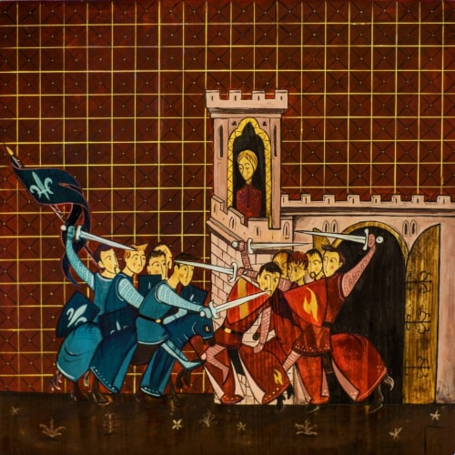

portfolio
.jpg "Franciszek Ksawery (2018)")
.jpg "Ostatnia Wieczerza (2018)")

.jpg "Mandylion (2018)")
.jpg "Stanisław Kostka (2018)")
.jpg "Wywyższenie (2018)")
.jpg "Mystery of Love (2018)")
.jpg "Tajemnica Theotokos")

.jpg "Tajemnica Wielkiej Soboty")
.jpg "Św. Ignacy piszący Konstytucje TJ (2018)")
.jpg "Umycie nóg (2018)")
.jpg "Pokutujący Piotr (2017)")

.jpg "Pantokrator (2017)")
.jpg "Wszyscy święci Towarzystwa Jezusowego (2017)")
(1).jpg "Pantokrator (2017)")
.jpg "Igonaid (2017)")
.jpg "Cichy i pokornego serca (2017)")
.jpg "Mural Życie św. Stanisława Kostki (2016)")
.jpg "Św. Ignacy piszący Ćwiczenia Duchowe (2016)")
.jpg "Katabasis Zstąpienie (2015)")
.jpg "Ostatnia Wieczerza (2015)")
.jpg "Otwarcie szóstej pieczęci Ap")
.jpg "Pantokrator 926 (2015)")
.jpg "Ukrzyżowanie (2015)")
.jpg "Cyryl i Nestoriusz na wieczornej przechadzce po całym dniu chrystologicznych dyskusji (2015)")
(1).jpg "Ukrzyżowanie (2015)")
.jpg "Ostatnia Wieczerza (2013)")
.jpg "Wieczerza w Emmaus (2013)")
.jpg "Panna na ten czas psałterz czytała (2012)")
.jpg "Zwiastowanie (2012)")
.jpg "Piotr Skarga (2011)")
.jpg "Preacher plakat (2011)")
.jpg "Theotokos (2011)")
Jezuita, ksiądz, artysta komiksowy.
Urodził się w ostatnich dniach października w czasach, kiedy Polska jeszcze była Rzeczpospolitą Ludową w mieście na Południu Polski, które słynie z kremówek i pewnego Karola, który został Papieżem.
Studiował filozofię w Krakowie i teologię oraz duchowość chrześcijańskiego Wschodu w Rzymie. Pracował jako duszpasterz i nauczyciel w publicznym liceum w Limerick w Irlandii.
Jest autorem nagrodzonego Feniksem komiksu ‚Kostka’ o życiu św. Stanisława Kostki SJ oraz licznych ilustracji, okładek książek i magazynów.
Tworzy również obrazy o tematyce religijnej o głębokiej symbolice, czerpiące z tradycji chrześcijańskiego Wschodu i Zachodu.
Obecnie mieszka i pracuje jako duszpasterz młodzieży w Opolu, gdzie stara się zakończyć prace nad komiksową opowieścią o życiu św. Ignacego Loyoli widzianą oczyma św. Franciszka Ksawerego.